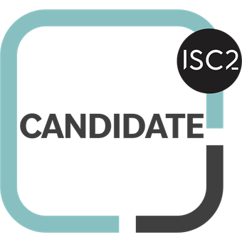
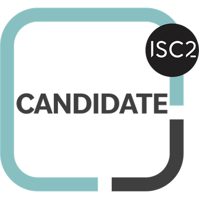

Sobre mim
Trabalho com TI desde a adolescência e sempre fui conhecido como o "menino do computador" da família, assumindo a responsabilidade por toda a manutenção relacionada a essa área. Aos 16 anos, cuidei de uma lan-house no interior, onde aprendi a lidar com diferentes equipamentos e a resolver problemas técnicos rapidamente. Iniciei minha carreira profissional aos 18 anos, ao assumir uma bolsa no departamento de odontologia da UFRN. No entanto, após quatro meses, decidi mudar para o Centro de Biociências da UFRN, onde realmente comecei a construir minha trajetória na tecnologia. Atualmente, meu foco está na área de Cibersegurança. Embora esteja ainda na fase inicial de estudos, já conquistei algumas certificações relevantes que refletem meu comprometimento e interesse por essa área em crescimento. Apesar de não ter experiência profissional específica em Cibersegurança, minha bagagem em suporte técnico e administração de sistemas me proporcionou uma sólida compreensão de conceitos que se interligam diretamente com essa disciplina. Sou uma pessoa que valoriza a comunicação clara e a colaboração em equipe. Sempre busco manter uma postura proativa e organizada, o que me ajuda a lidar com desafios de forma eficiente. Estou empolgado com a oportunidade de aplicar meu conhecimento e habilidades em Cibersegurança, e estou sempre em busca de aprender mais e aprimorar minhas capacidades.
Soft skills
ComunicaçãoCibersegurança
Possuo uma sólida compreensão dos princípios de segurança da informação, com objetivo é garantir a integridade, confidencialidade e disponibilidade das informações. Mas infelizmente não possuo atuação profissional, minha atuação no momento está restrito ao campo acadêmico.
Hablidades
CriptografiaDesenvolvimento
Minhas habilidades de desenvolvimento são predominantemente autônomas, especialmente no front-end, onde meu aprendizado veio de cursos extracurriculares, fora do ambiente acadêmico. Atualmente, atuo como freelancer, desenvolvendo diversos sites. No back-end, tenho um conhecimento mais sólido adquirido durante a formação acadêmica, onde me aprofundei nas disciplinas relacionadas ao desenvolvimento.
Hablidades
Front-end (HTML, CSS, JavaScript)Suporte Técnico
Tenho ampla experiência em suporte técnico, oferecendo tanto manutenção preventiva quanto corretiva de equipamentos de hardware, além disso, atuo com eficiência no suporte técnico em software, sempre com foco na satisfação do cliente. Possuo experiência em suporte técnico de Nível 1, Nível 2 e Nível 3 (N1, N2 e N3). Na última empresa em que trabalhei, fui um dos dashboards que monitorava a quantidade de incidentes e requisições solucionadas, destacava-me como o analista com o maior número de tickets resolvidos.
Hablidades
Suporte Técnico em HardwareInfraestrutura
Na área de Infraestrutura, adquiri ampla experiência tanto na resolução de incidentes quanto na condução de projetos de melhoria e implantação de soluções. Fui responsável pela organização e manutenção do parque tecnológico, incluindo a gestão de servidores. Além disso, atuei no gerenciamento dos mais diversos prestadores de serviços que gerenciavam alguns dos equipamentos. Há diversas outras habilidades que poderiam serem incluídas, mas irei resumir essas poucas habilidades.
Habilidades
Configuração e gerencimaneto de redesDemais Hablidades
LGPD 


O designer deste site (eu mesmo) optou por criar uma interface ideal para computadores. Por favor, acesse este site em um desktop ou notebook para uma melhor experiência.